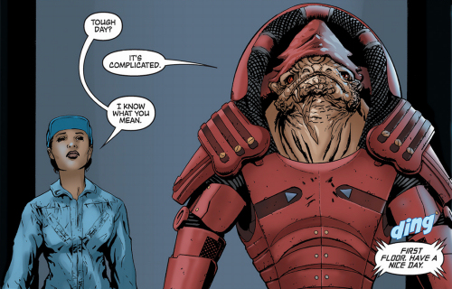
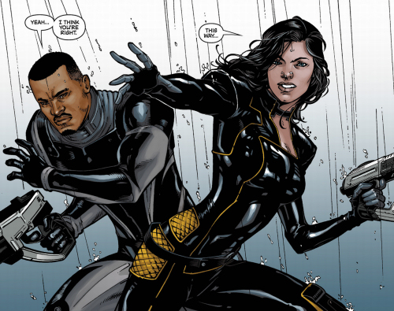
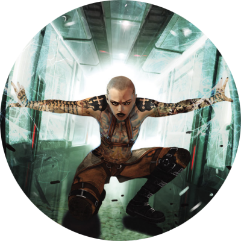
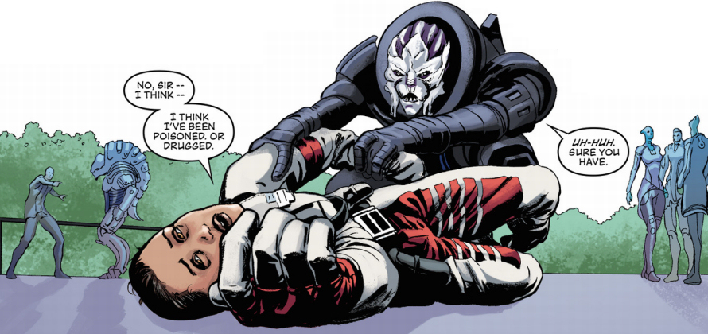
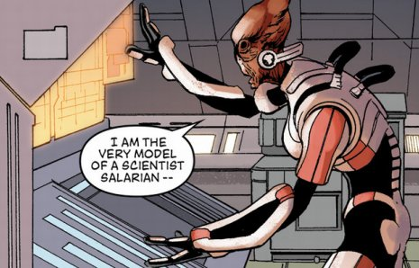
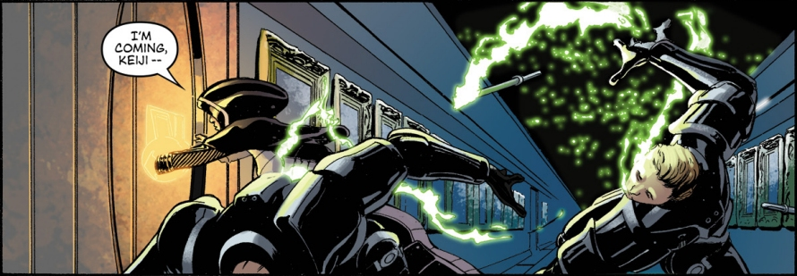
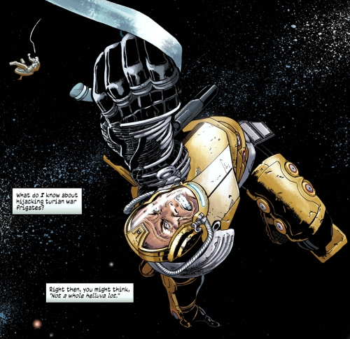
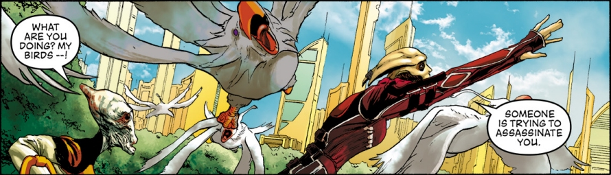

Mass Effect: Foundation presents 12 short stories written by Mac Walters, lead writer of the Mass Effect trilogy of video games, with the aim to expand the Mass Effect universe and flesh out some of its characters and their background, in order to give more credibility to the key protagonists and events of the games. The majority of the issues were illustrated by Tony Parker, except for issue 1 (Omar Francia), issues 5-6 (Matthew Clark), and issue 7 (Garry Brown). The stunning cover art was created by a French illustrator Benjamin Carre.
The 13th narrative, and the first issue of the comic book series, reveals the background story of Rasa (who is a reoccurring character serving as a joining element of the twelve disjoined stories), before she became an operative of Cerberus, explaining the reasons why she felt compelled to enrol in this secretive pro-human paramilitary organisation.
Next two issues tell the account of Rasa’s first encounter with the Krogan bounty hunter Urdnot Wrex who she chances upon on one of her assignments for Illusive Man, before recounting the episode when Rasa (under a guise of a psychologist counselling the victims of PTSD) interrogated Chief Ashley Williams about the attack of Turian Spectre Saren and his Geth army on Eden Prime, where the whole Williams’s squad, along with the 3 other units, fell into ambush and were completely wiped out (with Williams saved by Commander Shepard) after they were sent on a seemingly ordinary mission to secure the excavation site of the unearthed Prothean Beacon.
Continuing with the background stories of some well known characters of the Mass Effect universe, the fourth issue visits the off-world Biotic Acclimation And Temperance training (BAAT) camp set up on the Gagarin Station (a.k.a. Jump Zero) in 2160s. Kaidan Alenko was one of the youth who, after being exposed to Element Zero and showing promising signs of biotic potential, attended this strict, military-like training camp. The training, supervised by the Turian biotics instructor Commander Vyrnnus, was hard to say the least, and contact with the families back on Earth was kept to minimum. Infamous for his brutal training techniques, Commander Vyrnnus did not hesitate to exercise corporal punishment, as well as subject the trainees to hunger and thirst, whenever he deemed it necessary, to break the recruits both mentally and physically. This however backfired on him one day, when, after he broke the arm of Rahna, Kaidan’s best friend and sweetheart, Kaidan lashed out at the abusive instructor and killed him using his emerging biotic powers.
In the story arc spanning the issues 5 - 6, describing the events shortly after the Battle of the Citadel, Illusive Man briefs Rasa about the disappearance of Normandy and Commander Shepard’s presumed death. Later on, Jacob Taylor - a former Alliance marine, meets Miranda Lawson - a Cerberus officer, who is trying to recruit him for Cerberus. Taylor agrees to take part in a ‘taster’ mission with the goal to find and bring back Commander Shepard (or what’s left of him) which takes them to Terminus System. While there, Lawson gets ambushed, overpowered and abducted by the Batarian thugs. Taylor, with the help of Lakshmi, a ten-year-old local girl, saves Lawson and in the process liberates dozens of humans held in captivity by the Batarian slavers. Ultimately, their mission ends in failure, as it transpires that the stasis pod with Shepard’s body was already sold to another party.
The issue 7 visits Jack a.k.a. ‘Subject Zero’, an exceptionally gifted female human Biotic, at the moment when Jack revisits the Cerberus Training Facility where she was held against her will and experimented upon as a child. As Jack passes through the facility, wreaking havoc in her wake, killing all the employees and releasing the new trainees, Illusive Man sends in Rasa and Kai Leng to apprehend her and bring her in for questioning. The mission doesn’t go exactly according to plan, as Rasa’s and Kai’s martial skills (however impressive they might be) are no match for Subject Zero’s off-the-charts biotic abilities. In the end, Jack is captured by a Krogan leader of the Blue Sun mercenaries, but not before massacring the rest of the Blue Suns sent in by Illusive Man as a fail-safe precaution.
Next issue sees Rasa briefed by Miranda Lawson at the Minuteman space station, where she learns about the Lazarus Project – the secret attempt to create Commander Shepard’s clone. Miranda also reveals that in order to rebuild the commander, Cerberus requires one final piece of information – Shepard’s classified records stored at the Spectre Offices on Citadel.
To retrieve the information, Rasa meets Tela Vasir, an Asari Spectre, under the ruse of bringing her a disc with valuable, highly classified information about Cerberus (unknown to Vasir, the information on the disc is, in fact, outdated). However, Vasir sees through the deception, and Rasa is caught in the act of retrieving the classified files from the spectre’s computer. Vasir offers Rasa an opportunity to work for her as a double agent (or being blacklisted as a criminal throughout the galaxy) with an assignment to deliver a spyware-loaded disc with the Shepard’s classified records to Cerberus.
After despondent Rasa visits a bar to try and drown her despair in booze, her day just gets better when she unwittingly accepts a spiked drink from a patron. When she wakes up some days later back on the Minuteman station, Miranda retrieves her disc and, despite Rasa’s feeble protests, inserts it into a computer. Spectre’s virus triggers, but is quickly deactivated by skilful Miranda, who manages to retrieve the Shepard’s classified records. Illusive Man acknowledges that, with her cover blown, Rasa can no longer work as an agent of Cerberus. However, he devises for her a new purpose: Commander Shepard will need a new team and Rasa’s responsibility will be to assure that he will get the best team members possible.
 In the issue 9, bed-bound Rasa reluctantly accepts a task to go through the personal files of the potential candidates for the members of Shepard’s crew. The first person she investigates is Salarian Mordin Solus. Dr Solus, a brilliant, fast-thinking and fast-talking scientist, always guided by scientific principles and logic rather than morals, is the one responsible for modifying and strengthening the Genophage - a viral contagion causing the sterility of the Krogans, a fast-breeding, warlike alien race. Salarians are very wary of the Krogan expansion and devised the Genophage as a way of controlling the fast-growing Krogan population. However, after some time, Krogan females developed a partial resistance to this, morally questionable, ‘birth control method’ and this issue brings Dr Solus to Tuchanka, Krogan homeworld, where he is testing the effects of the new strain of the Genophage on a small Krogan settlement.
Issue 10 follows Kasumi Goto, Master Thief, and her lover Keiji Okuda, as they attempt a daring heist at the Donovan Hock's property on the planet Beckenstein. Hock is an avid art collector, with the corridors, halls and vaults of his property crammed with dozens of priceless artefacts and exceptional works of art. At first, everything seems to be going according to the plan as Kasumi fools the security guards and the two make their way into the vault. Unfortunately, Keiji is caught off-guard by Hock, who fatally stabs him and steals his Graybox (a device containing a collection of snapshots of one's memories). As Kasumi kneels over the body of dying Keiji, she vows to avenge his death and retrieve his memories so they can be together again.
Throughout the issues 11 - 12, Rasa, still under medical observations and not cleared for the field work, continues compiling data on the Shepard’s team: First dossier contains the information about Zaeed Massani, infamous bounty hunter and mercenary, who was once heading the Blue Sun mercenary outfit, before starting to work for Shadow Broker. His biggest assignment was an attempt to hijack and crash the flagship of the Turian’s 8th Fleet, War Frigate Verrikan. To accomplish this audacious objective, Zaeed put together a team of 3 mercenaries plus an inside man – a Turian commander, whose love for his superiors has gone sour. Not everything went according to the plan, but, despite losing all members of his team, Zaeed finished the job. Second dossier deals with Thane Krios, a renowned Drell sniper and professional assassin working for his Hanar patron (A few hundred years ago, the Hanar rescued several hundred thousand Drell from their overcrowded, dying planet and brought them to the Hanar homeworld Kahje, where the Drell integrated into the Hanar society as a client race of the Hanar). Thane’s training began at the tender age of six. At first, Thane found it difficult to kill people, but as the time passed by, he learned to be remorseless and detached from his actions. Until one day. That day, Thane was about to pull the trigger to terminate an old Salarian war criminal, who he had firmly in the sights of his sniper rifle, when a beautiful female Drell stepped into the line of fire, warned his would-be-victim, and spoiled the assassination attempt. Thane, wondering who was this mysterious brave woman, not afraid to step between a stranger and a bullet, started to question the morality of his profession. He began to shadow the woman, until one day, when her life was in danger, he intervened and saved her. Irikah, for that was her name, forgave Thane after he promised that he will put his past behind him, and they soon married and had a son. Thane kept good on his promise, and persuaded his Hanar patron to release him from his Compact (a contract between the Hanar patron and Drell client). Thane tried to find a job in order to support his fledgling family, but with no qualification, he was offered only unskilled labour work, and soon resolved to freelance again. One day, Thane fulfilled a contract to eliminate a Batarian leader of a slavery ring. Batarian slavers vowed revenge, but cowards that they are, they took an indirect route. They waited until Thane went away on one of his assignments and brutally murdered his wife, shortly after she managed to hide their son from the assailants. Thane, after hunting down and killing every one of the cowardly murderers, realised that his Hanar patron was right, when he once said: “We all must walk paths we are given”.
The last issue sees Rasa betraying Cerberus and making away with the pod containing Shepard’s clone, despite Lawson’s best effort to stop her. Lawson wants to send a retrieval team to go after the traitor, but she is stopped by Illusive Man, who tells her that they better concentrate on the impending threat posed by the Reapers and retrieval of the real Shepard’s body.
While the main goal of this comic book series - to expand the Mass Effect universe, was undoubtedly realised, one cannot help but feel that the storytelling isn’t as convincing as in some other, previous attempts, for instance Mass Effect: Redemption. The background stories too, are a bit of a hit-and-miss affair, with some much more convincing than others. As far as Rasa (who, as you may remember, is a character that was invented in the first issue as a joining element of the remaining twelve issues) goes, she feels pretty real in the first two issues, but later on her appearances start to feel less and less plausible, until by the issue 13 this character seems to be just this – a joining element.

The artwork is mostly solid, with the majority of the Mass Effect regulars instantaneously recognisable, but the quality of inking, which is immaculate in most of the issues, is a tad ropy in some (notably in the issues 4 and 8).
Overall, Mass Effect: Foundation is a worthy addition to the Mass Effect folklore.